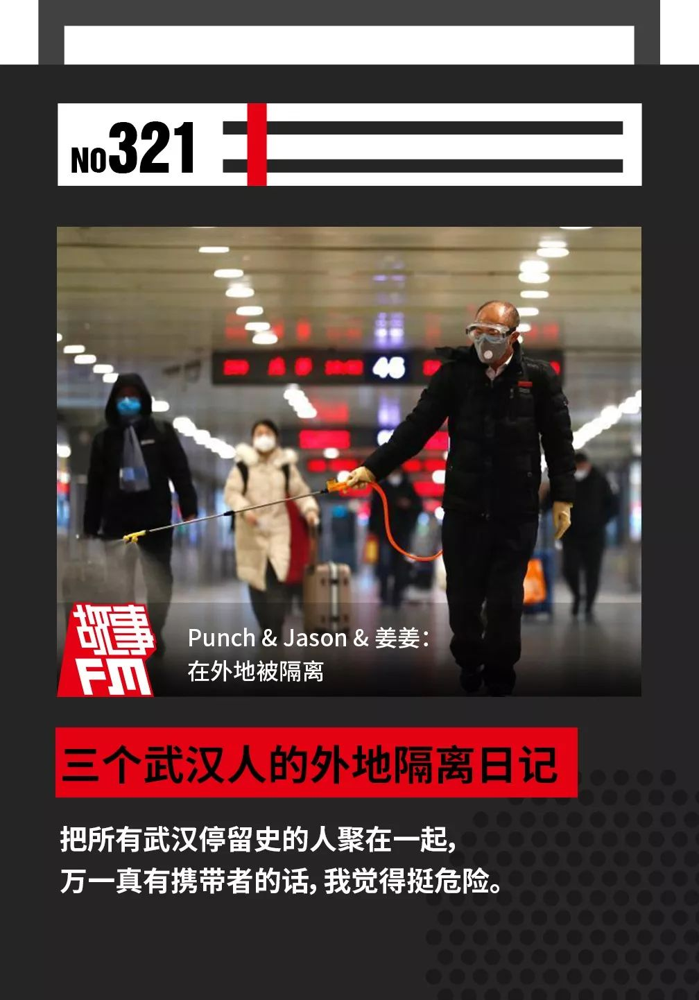
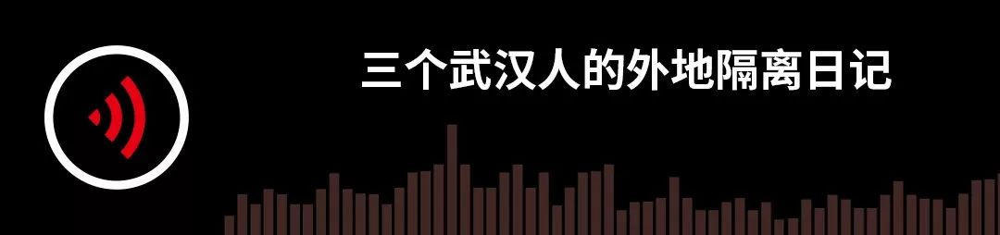
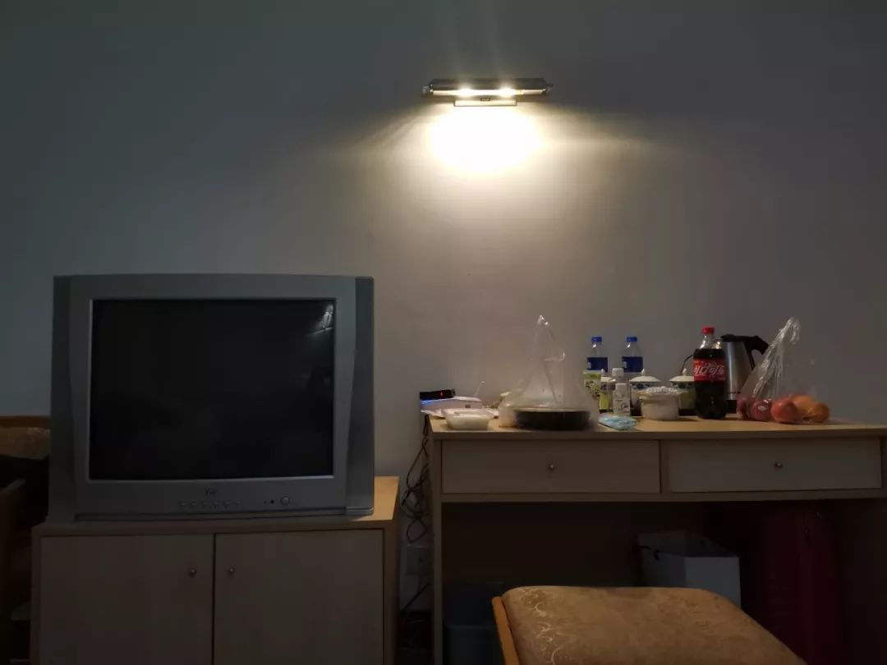
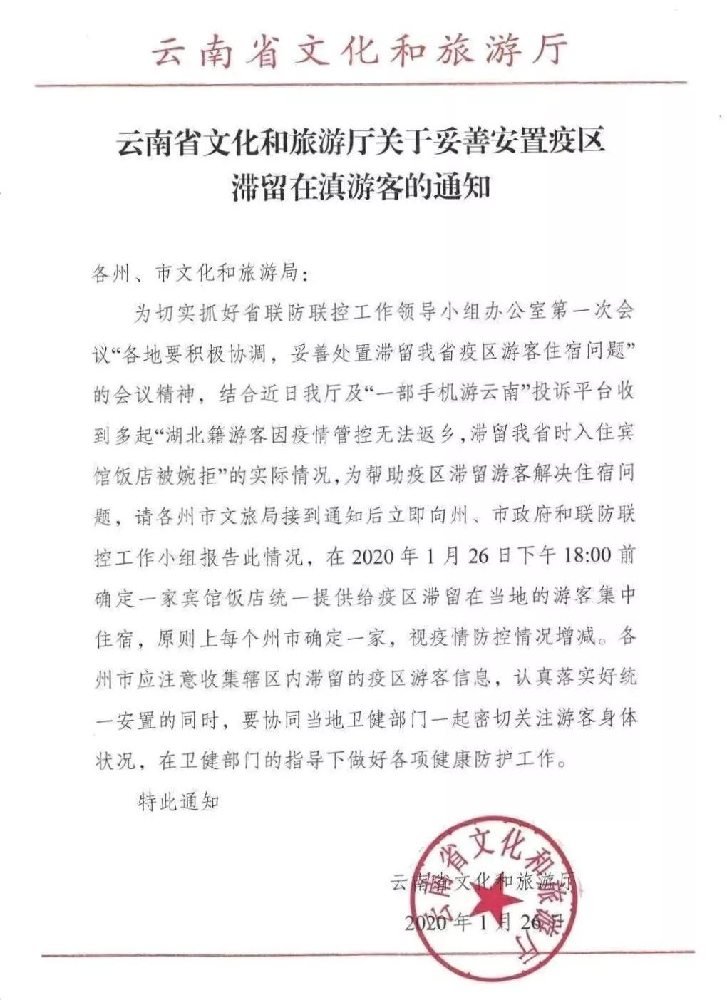
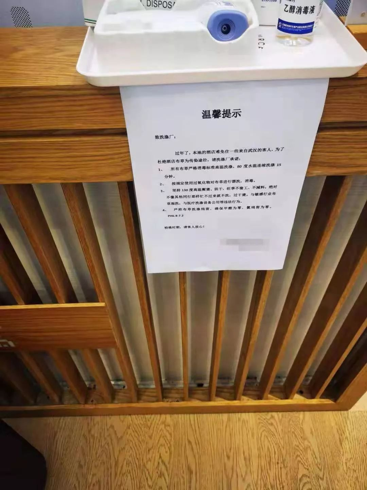

「经过这次，我最担心的是武汉人的心理创伤」
原文链接 备份链接 据相关数据统计，春节前，有近500万人离开武汉，他们中有近30%的人离开湖北，他们或出差、或进行计划许久的旅行，或回家过年，但伴随着疫情的加剧，他们成了一群「不被欢迎的人」。 一位武汉的小学老师已经连续三年去厦门过年， …



🎧 点击上方图片，跳转「故事FM」小程序，收听真人讲述。记得添加「我的小程序」，一键收听全部故事哟！
故事FM 前几天采访的武汉人，都是目前身在武汉的武汉人。但我们知道，现在散布在全国各地的武汉人，甚至湖北人，都在主动或者被动的接受一些隔离安排。
那在隔离中的他们现在生活怎么样？过得好不好？身处其中的体验如何？
今天，让我们来听听他们的故事。
Punch，武汉上学
回家后在河北某市指定宾馆隔离
我是 Punch，在武汉上学，今天是 2020 年 2 月 1 日，是我回到家的第 12 天，也是我在河北省某市一家指定宾馆接受隔离的第 3 天。
从 21 日回家到现在，我的体温一直处于正常水平，也没有表现出其他的症状，但还是不被允许在家自我隔离。
从回家后到初五，一直都没什么事。只是居委会在初二初三时来电问我体温。初四就没有电话了。到了初五，早上 9 点，我妈突然接到一个电话，说要把我隔离。我妈妈当时就提出说，没症状能不能选择居家隔离。那边就说要再问上级的意思。
下午 4 点多，另外一个居委会的工作人员来电说，可以居家隔离。我们就松了一口气，觉得没事了。结果，到了晚上 9 点，又来了一通电话，是早上的那个人打的，他说现在的要求必须到宾馆隔离，而且不光是我，我妈妈因跟我接触，要一起隔离，必须晚上 12 点前到，不然警方就会介入。
一听这么严肃，我们也是很配合，就开始收拾东西。结果 10 点的时候又打电话来说，我妈不收了，就只收我一个人，没有具体解释原因。

■被隔离的 Punch 在宾馆房间拍下 1 月 30 日至 2 月 2 日窗外所见
我没有症状，心里是不情愿去的，因为它相当于把所有武汉停留史的人聚在一起，万一真有携带者的话，我觉得挺危险。但当时，他说是市里大晚上紧急开会决定的，感觉确实是有政策。而我又确实是从武汉回来的。另外，如果不去，警方介入，就太没必要了。
我其实上午就在为被隔离做思想准备，提前想了想要带什么。当时除了换洗的衣服，我还带了一些口罩、酒精、酒精棉、小喷壶。其实我心里是怕的。虽然这边再三说消毒过多次，但我还是想多带点这些。
我家没汽车，只有一个电动车。北方晚上 10 点多还挺冷的，但是这边要求得很急，来不及安排车接。我妈妈就骑着电动车带着我过去。
我妈妈身体不好，我们到时已经 11 点多了。她回家就 12 点了。我和她视频时，她的表情不太好，我问她怎么了，她说满口牙疼。我知道她当晚肯定没睡好。后来聊天知道，她是凌晨 4 点多才将将睡着。
集中隔离地方是当地的一个我妈年轻时就有的，年头挺久的宾馆。
当晚我们到时，宾馆正门已经封住了，只能从侧面的那种很旧的室外楼梯上去。那里有个护士做登记，她问我有没有隔离通知单，我没有。她说后面要补，但是我现在还没看到。
宾馆挺多层的，我在 6 层。之前在楼下有听到送东西的人喊说，自己孩子在 8 层。
到了 6 楼，是一道比较旧的门，上面拴着铁链锁。当时挺黑的，我没看清。我的房间正好挨着门。
房间是三人间，因为有三张床。但只有我一个人住。进来的第一感觉是冷，因为北方没暖气还是很冷的。它只有一个中央空调。但非典时，中央空调是不让用的，这次也有新闻说隔离酒店应关闭中央空调，所以我第一晚特别害怕，都没敢开空调。但是到了凌晨 3 点，即便穿着所有的衣服、羽绒服，盖了两床被子，我还是冷得受不了，牙齿打颤。

■空调开关和出风口
我特别纠结，到底要不要开空调？我很害怕，可深更半夜，朋友睡了，我又不敢跟我妈说，怕她担心。我就打开手机录音机，自己和自己说话壮胆。
后面我想，如果这样活活被冻发烧，体温出了问题，就太不值了，所以我还是开了空调。开空调的一瞬间，我眼前真的好像出现了病毒一下涌出来，在空气里纷飞的样子。那晚我是戴着口罩睡的，大概从凌晨 4 点睡到早上 8 点。
正式隔离的第一天，我是 8 点被电话叫醒的，因为我们测体温是通过电话询问的方式，我迷迷糊糊地接电话，测体温，告诉她体温正常。
那天上午，我决定反映一下。负责人说空调没问题，这里的隔离条件是专家审核过的。不过我还是有点不放心，因为我打电话给前台，他一会说是分层控制，一会说是每屋独立控制，摇摆的答案让人不安。我对这个问题始终比较怀疑，所以即便在屋里，只要开空调，我还是会戴着口罩。
第一天，基本上就是在不停地打电话，上网查资料中度过的。
这里一日三餐都是按时放在门口的。早餐一般是粥或一些干粮，午餐是从饭店订的盒饭。送饭人会敲门，然后喊房间号，我觉得是为了确认里面的人是清醒状态。
我不敢开门，更不敢出门。虽然他们每天都消毒，但我还是不敢，甚至说开过门后，我要在门廊喷一遍酒精才能安心。所以平时收饭，也没见过其他人。直到昨天我才第一次看到送饭的人。
我同学调侃说，怎么感觉跟坐牢似的？但等我心态平稳后，倒觉得还好。
白天的时候，我妈给我送了电热毯。从那以后，我睡觉就不开空调了，也不用再戴口罩。所以第二晚睡得还挺好。昨天，整个人的心态就更缓和一些，没那么怕了。而且我妈也跟我聊，就说「你已经住到这儿了，又不能走，你只能选择相信，因为不信任也没有办法，不要自己再吓自己，反倒那样会让你整个人很紧张。万一连带的身体也有一些反应，就不好了。」
第二天，也就是跟同学聊聊天，看看电子书什么。在小空间里待久了，腿有点麻，关节也都很僵硬，所以昨天我做了拉伸，也是给自己找点事做。中午就正常的吃饭。

■房间内部的样子
下午我妈妈又给我送了一些水果。一开始我妈特别担心，寝食难安。但就像她说的，既来之则安之。我感觉她这两天状态比以前好一点。但还是总想给我送东西，就总问我「你吃要不要吃这个？」「你吃要不要吃那个？」其实在小房间里面运动量很小，每天吃不下多少，但我能感受到她很怕我想用什么没有，想吃什么没有。怕我受委屈。
其他的主要还是打发时间。每天早上测完体温，我都会给房间通通风，再烧一大壶热水，开始一大波消毒。觉得时间还过得还挺快。而且几个关系好的同学也给我很大帮助，他们拉了个群，陪我聊聊天，玩玩剧本杀之类的打发时间的游戏。他们说你自己一个人也害怕，有什么事就跟他们聊。我觉得给我帮助挺大的。家里也是，吃饭时，我们都是视频着一起吃。
按照居委会和负责人的说法，因为有 14 天潜伏期，我从到家开始算要观察 14 天。现在已经是我到家的第 12 天了。再隔离 2 天，没有异常，我应该就可以回家了吧。
现在看整件事，我从收到消息时震惊不安，到现在其实心态比较平稳。一开始，觉得条件不够完善，手续也不完备，比如说，通知都只是电话方式，我没有看到任何书面材料。后面，我想他们要在全市去集结这些人其实是挺大的工作量，也就算了。
但我最大的担心还是对无症状人员的隔离，真的有必要都集结在宾馆吗？我个人比较害怕。我觉得这样可能会增大感染几率。
现在就觉得还是选择相信，因为你总是去反映的话，也在增加他们现在已经够大的工作量。可能现在是勉强能支撑，你再去反映，他们没有具体回应，却可能忙多出错。
Jason，科研工作者
目前滞留在云南昆明，自我隔离
我们一家三口每年春节都会出门旅游，今年也不例外。去年 12 月，我们就预定好了行程，准备 1 月 20 日出发，跟团去云南旅游。
大约在元旦的时候，我和很多人一样，在网上看到了关于某种肺炎的传言。由于所处行业的关系，我对这个传言留意得相对多一些。
那段时间，不是有 8 个发布消息的人被约谈了吗？其中有个医生和我的一个朋友在同一家医院工作。当时，那些医生朋友尽管不敢在网上说，但还是会尽力通过朋友圈隐晦地提示一些信息，比如大家一定要戴口罩，当下的形势是不轻松的。
看到这些消息后，我第一时间采购了一些口罩，并且和家人一起严格佩戴，不敢松懈。
但与此同时，我对他所说的「并不轻松」没有完全明白。毕竟，我的专业方向并不是医学，也拿不到第一手数据。按照我当时的理解，这场疫情目前仅仅是一场火灾里的一团小火，只要「上面」足够重视，就能够把它扑灭。
正是基于这个乐观的判断，再加上当时官方认定的「可防可控」，我没有取消家人的旅行计划。
1 月 20 日，我们从武汉出发，前往昆明。旅途的全程中，直到最终抵达酒店，我和家人都戴了口罩，一刻也没有摘下来过。
接下来的这几天，游玩途中，各方消息纷至沓来，形势变化远远超出了我的想象。我隐隐预感到，我们可能回不了家了。

■夜游西双版纳植物园
果然，1 月 23 日凌晨，在西双版纳，我起床上厕所的时候，收到了「武汉封城」的消息。尽管我已经有了心理准备，但那一刻，还是万分震惊。那么，接下来该怎么办？孩子要怎么上学？我们要怎么工作？这个国家又将要面对什么？
从那一天起，所有人才真正意识到了问题的严重性。而与此同时，我们在异乡的处境也变得微妙起来。
就在 23 日那天上午，我们登上旅行团的大巴后，发生了第一个信号。导游在例行讲解了当天的行程和注意事项后，突然插播了一个消息：我们家和另外一个家庭的航班被取消了。然后，她问我们是从哪里出发的。我便如实回答说，「我们是从武汉出发的」。
就在那一刻，我清楚地听到后排传来了一阵倒吸冷气的声音。我能想象，同车的旅伴们此刻肯定十分懊恼，觉得自己怎么这么倒霉，碰上了一群武汉人。
到达景点后，我下车时发现，旅行团中戴口罩的人明显增多了。在此之前，除了我们一家人以外，只有少数人戴了口罩。
对了，这里有必要说明一下，旅行团中另外一家被取消了航班的人并不是从武汉出发的。他们是从江苏出发的，而之所以会被「锁定」，仅仅因为他们的籍贯在武汉。
接下来，1 月 24 日，我们从西双版纳返回了昆明，而在当时，酒店还是允许我们入住的。
1 月 25 日，形势越来越糟。从这天开始，酒店每隔一段时间都会给我们全家人测体温，还给我们的身份证件拍了照，说是当地派出所需要。酒店的服务人员也对我们的房间避之不及。
1 月 26 日，我上午 7:30 分去了酒店的餐厅吃自助早餐，一切如常。大约 9:00，我的妻子和儿子才起床去吃早餐，但是，他们很快就回来了。原来，他们刚到餐厅门口，报上了房间号，就被如临大敌地拦住了。服务人员提出，他们会把早餐送到我们的房间来，让我们自行用餐。
当时，我的儿子感到非常委屈，对他来说，这样的事情确实很难理解。我只好哄他说，「酒店的送餐服务都是要加收服务费的，他们免费给我们送餐，这可是提高了我们的服务待遇啊！」
但儿子还是不开心，我就从洗手间里拿出了两筒卷纸，逗他说，「没事，他们既然不让我们去餐厅，我们就把他们的卷纸统统拿走！」他这才破涕为笑。
当然，我这么做也不仅仅是为了逗儿子开心。我能预见到，如果事态发展下去，物资供应必然会紧张，这两筒卷纸也许会派上用场。
我儿子的委屈也并不是没来由的。就在那天，我们在大巴上承认自己是从武汉来的以后，他刚认识的一个小伙伴差点就不和他玩了。
但好在，小孩子之间都是比较好沟通的。当时，我儿子振振有词地向小伙伴解释，「我没有冠状病毒呀！不是每个武汉人都有冠状病毒的！」那孩子很快就被说服了，说，「好吧，那我相信你！」然后，两个孩子便又戴着口罩愉快地玩到一起了。
后来有一天，那个孩子又来找我们了。他对我说，「我妈妈说想问你一下，你们现在有没有发热现象啊？我妈妈说他们单位要问这个」。
我注意到，当时，他的妈妈脸上露出了很不好意思的表情。显然，她心里有忧虑，又不好意思问出口，就让孩子来试探一下。
于是，我告诉那个孩子，「不用担心，我们全家都量过体温了，我们没有任何问题，也请你妈妈放心」。
那天，旅行团在昆明原本还剩下一个本地的旅行项目，但是，他们还是让我们两个武汉籍家庭签署了「自愿退团」的协议。
在酒店退房的前一天，我们已经预定好了昆明当地的一家民宿。由于那家民宿的老板也是湖北人，出于对老乡的照顾，他们在了解清楚了我们全家的情况，以及从一月初以来的严格防护经历后，同意我们入住。
但接下来，我们就收到了消息，按照云南旅游管理上级单位的要求，所有民宿都不能随意接待武汉游客。我们不愿意给民宿老板添麻烦，便取消了预定。
在当时，我了解到，云南省对于我们这些湖北籍游客提供的解决方案是：他们要求各个市／自治州指定一到两家酒店，为湖北游客提供住宿。

说实话，对于这项举措，我是很不接受。撇开心理上「受歧视」的因素，我能预想到，当我们这么多外籍游客被隔离到一两家酒店后，一旦物资供应出了问题，一定会有麻烦，同时，交叉感染的风险也会增大。
幸好，在这个时候，我联系到了一个当地的老朋友，带着家人搬进了他的一个空置的新房里，一直住到现在。
这些天以来，除了我出门采购了两次物资以外，我们一家人几乎都没怎么出门，连倒垃圾都只能趁着夜黑风高的时候出门，生怕被邻居撞见，让他们听说楼里住了武汉人，搞得人心惶惶。
我的一个在上海自我隔离的朋友比我们更惨，他连垃圾都不敢随便扔，因为当地已经实施了垃圾分类，他不熟练，一旦搞错了，就会被邻居发现他是外地人，引来麻烦。
我还记得，有一次，我出门采购物资的时候打了一辆出租车，司机师傅攀谈的时候，问我是哪里人。我为了避免麻烦，就说自己是河南人，可司机师傅还是大惊失色，「你们河南都传染那么多了，还跑出来哇！」
尽管郁闷，但好在，从 1 月 20 日算起，我们一家人离开武汉已经 12 天了，马上就要超过所谓的「潜伏期」天数了。在那之后，也许就不会这么麻烦了。
姜姜，武汉人
在珠海隔离的第 10 天
今天是 2 月 1 日，我们是 1 月 22 日从武汉到的珠海。
为了这个春节假期，我和朋友 10 月底就定好了行程，原本计划的是 1 月 22 日到了珠海后，1 月 24 日从珠海到澳门，然后再坐飞机到马尼拉，开始我们的春节之旅。
但是 1 月 21 日的时候，我看新闻上说因为这边的疫情，已经不鼓励大家来武汉了，心里面咯噔了一下，我意识到事情可能有点严重。于是我马上拨通了市长热线，想跟他们确认一下，在这种情况下我还能不能出去旅游，当时工作人员给我的回复是，他们没有资格限制我们的人身自由。
因为我们一直收到的消息都是「病情是可控的」，考虑到疫情应该还在可控范围之内，所以等到第二天我们就按照原计划出发了，从武汉到广州南，然后再从广州南到了珠海。
到了珠海的第二天，也就是 1 月 23 日，我早上起来刷了一下微博，然后就傻了——武汉封城了！我马上就意识到事情很严重了，就跟我的同伴商量了一下，我们都很怕出去会给别人带来困扰，于是就决定退掉后面的行程。
退掉行程之后，我预订了 24 号回程的火车票，因为那个时候已经不能直接买到武汉站的车票了，在电话里跟铁路的工作人员沟通情况了之后，我们买了武汉的下一站信阳的火车票。
因为原本只是为了方便过关去澳门，我们住的酒店比较简陋，住了一天之后，考虑马上就要过年了，我们就换了一家好一点的酒店。

■酒店前台的提示
等我们到了新预定的这个酒店的时候，前台的小妹妹看到我们身份证上的武汉二字，就停住了，告诉我们，「系统坏了，需要稍等一下」。不一会儿，他们的经理就过来了，说他们也没有别的意思，就希望我们去医院做一个体检，拿着健康证明来办理入住。
我们当时也很理解，毕竟出了这么大的事，我们又是从武汉来的，酒店谨慎一些也是正常的，于是我们就打车去了医院。
说明来意后，在导医台的工作人员的指引下，我们挂了内科的号。
等进了诊室，医生就问我们，「哪里不舒服？」
我们说，「我们没有不舒服。因为我们是从武汉来的，现在要住酒店，他们希望我们开一个健康证明。」
听完这句话，医生突然就炸了，说，「谁让你们上来的？谁让你们到我们这来的？我这里开不了证明！我就算证明了你现在是正常的，我也没有办法证明你以后是正常的。你这个证明要我怎么开？谁让你们来的，你就去找谁！」
面对这么一串数落，我们一下就懵了。在心里又劝自己，可能就是这样子，你没有办法去批判别人，因为别人没有做错。
于是我们又去一楼导医台的小姐姐，她打了将近 20 多分钟的电话请示上级，然后让我们去挂了一个急诊的号。
到了急诊室，我发现这边的医生护士都是全副武装的。一位男护士接待了我们，等我们说明来意之后，他安慰我们说，「你别紧张。」但是，其实我们看得出来，他比我们更紧张。
我们被分配给了一位急诊大夫，我们向他解释说我们现在没有发烧，也没有咳嗽，但是希望能做个检查，拿到一份健康证明来入住酒店。
他说，「正常人来什么医院？你是正常人，我怎么给你开证明？正常人不需要来医院。」
同学问，「那能不能给我们查个血常规之类的？」
医生回答说，「既然你们要求查血常规，我就给你们开个单子。」
做完检查之后，我们所有的指标都是正常的，就拍给了酒店的前台小姐姐看，她回复我们说可以入住了。

■街道发给姜姜的健康告知书
成功入住的当晚，我们发现我们预定的那趟列车的线路图上，武汉站被取消了，客服电话也始终打不通，不明情况的我们只好选择先退票。因为短时间内不能离开珠海了，我们第二天就戴着口罩去了警察局，想做一下流动人口备案。
在警察局里，警察听说我们来自武汉，跟我们说了一句「稍等」，转身就走了，不一会儿他周围的同事也都走了。他们在里面的屋子里说，「快！快！外面两个武汉来的！」十几秒之后再出现，我就发现他们所有人都戴上了口罩。
他说，「你们那个区不归我们管。」
我说，「那我们应该去哪儿呢？」
他又改口说，「那算了，反正你来都来了，我还是给你登记一下。」
就在这个时候，酒店前台的小妹妹给我们发微信说，「不好意思，我们这边没有办法让你们继续住了。因为街道那边下来通知，不允许武汉人入住。」
这两天来遭到的各种冷漠的态度和对待，在我看到这条微信的那一刻集体爆发，我真的一下就炸了——「还要我们怎么样呢？现在酒店也不让我们入住了。」
对面的警察脱口而出，「这个不归我们管，这个不是我们的范围之内，这个是你们和酒店的事情，你们自己跟酒店协商。」
走投无路的我拨打了珠海的市长热线，说明了情况。
我不知道我们做错了什么？22 日出来之前，我打了武汉的市长热线确认；23 日武汉封城，我第一时间退掉了后续行程，并试图买票回家；酒店让我们开健康证明，我们立马去医院做检查；得知暂时回不去武汉了，主动到警察局做登记。我们一直在说服自己忍受别人的态度，告诉自己别人做的是对的，确实是我们给他们添麻烦了，我也很害怕万一自己真的有点什么事会害到别人。
市长热线的接线员说，让我们稍等一下，他们会尽快处理这个问题。
于是我们回到了酒店，听从前台的意见，把自己关在屋里。等到下午，街道的主任给我们打电话了，说，「早上非常不好意思，可能大家传达之间有一些问题，是沟通不当造成了一些误解。这样好不好？你们就自己在酒店里隔离 14 天，在这期间你们可以点外卖，会有工作人员给你们送到门口。」
我们按照他说的去做了。
第二天早上，我们门口来了很多人，街道的主任和他的同事们特地过来看我们，还拎了一袋巧克力和两个红包。
我们当时拒绝了，因为我们觉得已经非常给别人添麻烦了。
他坚持希望我们收下，说，「这是作为政府的一点关怀。」
我看到他旁边的工作人员拿起了照相机，我就问他，「什么意思？」
他说，「没有别的意思，就只是拍一下，记录一下。」
其实我们都懂。但是那个时候，我真的不希望这么狼狈的自己出现在别人的镜头里。在我表明不希望被拍照之后，那个工作人员就把相机收起来了。

■隔离期间带给姜姜一些安慰的「佩琪」小碗
其实我们住在酒店的这几天，真的很感谢酒店的经理，他来给我们送快递的时候，总是心疼我们，说「正常人都这样被关坏了。」
这几天我一直在网上刷消息，说实话我们受到的待遇确实比很多其他在外的武汉同胞要好得多，除了前期有一点小误会，酒店和街道的工作人员真的给了我们许多关怀。我们也非常抱歉，给他们带来了很大的麻烦。
目前，我们每天都有量体温和上报，很庆幸，截止到目前我们都很健康。所以，我现在比较乐观地打算，在隔离期结束之后，买 2 月 7 日早上的票回武汉。我会提前把行李打包快递回去，然后如果列车可以停靠武汉站的话，我就从武汉站骑摩拜回家。
——————
其实从声音当中你应该也能听出来，在这样的非常时期，面对隔离这样的非常措施，三位讲述人表现出来的都是非常理解和配合的态度。
我们应该感谢他们为全国人做出的个人自由上的牺牲，我也希望大众不要带着偏见去对待他们，毕竟我们防的是疫情，而不是来自某个特定区域的人。
而且人家都牺牲这么多了，各地的部门在执行隔离措施的时候，更是要带着尊重，更细心地安排他们的生活所需。
感谢你的收听，祝你和家人平安健康！
-封面图来源 中新网
未注明来源图片由 讲述者 提供


Staff
讲述者 | Punch Jason 姜姜
主播 | @寇爱哲
制作人 | 徐林枫 梁珂 刘逗
声音设计 | 孙泽雨
文字 | 徐林枫 梁珂 刘逗
运营 | 翌辰
BGM List
01.Robert Haigh - Orbits
02.Loved Ones
03.Dave Porter - Chuck’s Theme
04.Robert Haigh - Persistence Of Memory
05.Trent Reznor - Hand Covers Bruise
06.Robert Haigh - Secret Codes
故事FM
用你的声音，讲述你的故事
苹果播客 | 网易云音乐 | 蜻蜓 FM | 喜马拉雅
QQ 音乐 | 荔枝FM | 懒人听书 | 酷狗音乐
均可收听

▼ 点击「阅读原文」，讲出你的故事
故事FM
支持故事FM
微信扫一扫赞赏作者 赞赏
长按二维码向我转账
支持故事FM
受苹果公司新规定影响，微信 iOS 版的赞赏功能被关闭，可通过二维码转账支持公众号。
原文链接 备份链接 据相关数据统计，春节前，有近500万人离开武汉，他们中有近30%的人离开湖北，他们或出差、或进行计划许久的旅行，或回家过年，但伴随着疫情的加剧，他们成了一群「不被欢迎的人」。 一位武汉的小学老师已经连续三年去厦门过年， …
原文链接 备份链接 大家好，我是田静。 疫情爆发最严重的那几天，我家的亲戚被隔离了。 听到消息后家里人都吓得不轻。原来是亲戚小龙春节前去过武汉一晚，回来后就发烧、胸闷、呼吸困难，在老家农村，只能监管，不能诊治。 每天在家隔离，实时向当地村 …
原文链接 备份链接 《战疫口述记》，是燃财经在新型冠状病毒肺炎期间推出的特别栏目，记录疫情亲历者的观察和感受。本文为第3篇，查看前2篇请点击《农村这样防肺炎》《我在武汉战肺炎》。 作者 | 苏琦 金玙璠 孟亚娜 唐亚华 孔明明 魏佳 …
原文链接 备份链接 非常时期，武汉成了全国人民挂念、祈福的城市。封城后，武汉人民的真实生活是什么样？ 正和岛自1月26日起特别推出《叶青：我在武汉疫区的第N天》专栏。叶青是一位定居武汉40年的市民，也是一名学者和官员。接下来的一段时间，他 …
原文链接 备份链接 和老高一样，我们都等待着这一天，作为一名在武汉打拼的普通市民，我爱这座城市，希望武汉好起来，希望我的故事能带给你们力量。 口述 | 陈 璇 整理 | 竹 里 我叫陈璇，今年48岁，湖北咸宁市嘉鱼县人，2013年，我和老 …